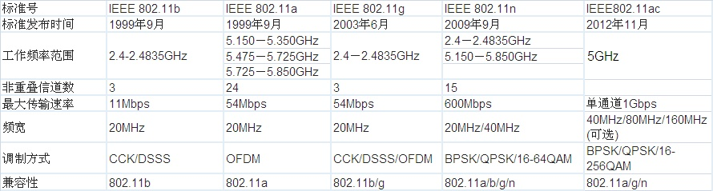
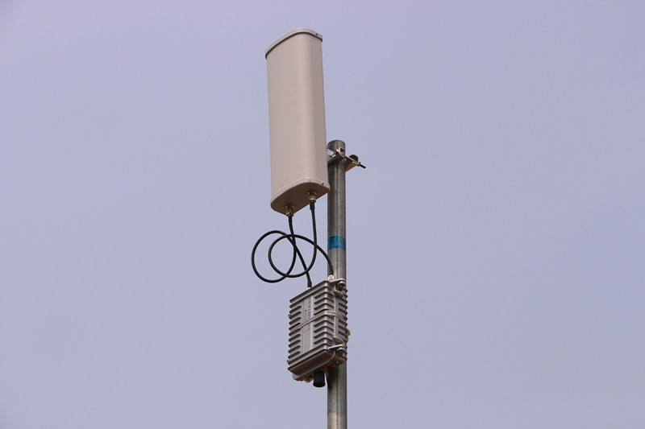
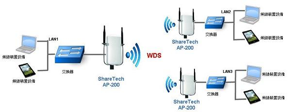

IEEE 802.11无线 LANs 概述
无线链路和网络特征
802.11协议簇是国际电工电子工程学会（IEEE）为无线局域网络制定的标准。虽然WI-FI使用了802.11的媒体访问数据链路层（DLL）和物理层（PHY），但是两者并不完全一致。
这里主要概述了 802.11无线LAN的特征。不过首先应该关注的是无线网络与有线网络的区别。
当我们寻找有线和无线网络的重要区别时，应该重点关注链路层，我们确实可以发现有线链路和无线链路有许多重要区别：
- 递减的信号强度。信号强度受到发送方和接收方距离的增加而递减。
- 来自其他源的干扰。在同一个频段发送信号的电波源会互相干扰。
- 多径传播（multipath propagation）。当电磁波受到反射，会在发送方和接收方之间走过多条不同长度的路径，此时出现多径传播，这使得接受的信号变得模糊。
IEEE 802.11 标准
常见的关于LAN的802.11标准包括 802.11b、802.11a、802.11g等。
它们使用相同的媒体访问协议CSMA/CA，并且使用相同的链路层帧格式。

802.11 体系结构
802.11 体系结构的基本构建模块是基本服务集（Basic Service Set BSS），一个BBS包含若干个无线站点和一个被称为接入点（AP）的中央基站。与以太网设备类似，每个802.11无线站点都具有6字节的MAC地址。每个AP的无线接口也具有一个MAC地址。这些MAC地址也由IEEE管理，理论上全球唯一。


信道与关联
在802.11中，每个无线站点在发送或者接受网络层数据前，必须与一个AP相关联。而安装一个AP时，需要为其分配单字或者双字的服务集标识（SSID）。除了SSID，还需要分配一个信道号。
信道：
802.11定义了11个部分重叠的信道，当且仅当2个信道由4个或更多的信道隔开时，它们才不重叠。比如 1、6、11是唯一的3个非重叠信道集合。这样就可以在同一个物理网络安装3个AP。
关联：
为了获得互联网接入，你的无线站点需要加入其中一个子网并需要与其中一个AP相关联（associate）。关联意味着该无线站点在自身与该AP之间创建了一个虚拟线路。
然而，首先得回答：你的无线站点如何与某个特定的AP相关联？或者你的无线站点如何知道当前位置哪个AP可以使用？
802.11标准要求每个AP周期性地发送信标帧（beacon frame），每个信标帧包括该AP的SSID和MAC地址。
你的无线站点为了得知正在发送信标帧的AP，扫描11个信道，找到可能来着可能位于该区域的AP所发出的信标帧。
不过，802.11标准没有指定选择哪个可用的AP进行关联的算法，这个由802.11固件和无线主机的软件设计者来设计。
比如，主机选择接收到的具有最高信号强度的信标帧，但可能过载。
这里扫描分两种：
- 被动扫描（passive scanning），自AP发送信标帧，无线站点扫描信道和监听信标帧，然后向选择的AP发送关联请求帧，最后AP响应关联响应帧
- 主动扫描（active scanning），无线站点广播探测请求帧，AP发送探测响应，然后无线站点选择AP发送关联请求帧，最后AP响应关联响应帧
鉴别与接入
为了与特定的AP创建关联，某无线站点可能需要向该AP鉴别它自身。
802.11 提供了几种不同的鉴别和接入方法
- 基于站点的MAC地址允许其接入网络
- 基于用户名和口令
上述两种情况下，可能使用的RADIUS（基于UDP）和DIAMETER（最初作为RADIUS的改良）这样的协议。